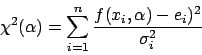
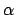
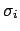
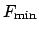
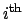
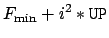
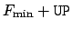
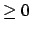
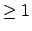

Minuit is usually used to find the ``best'' values of a set of parameters, where ``best'' is defined as those values which minimize a given function, FCN. The width of the function minimum, or more generally, the shape of the function in some neighbourhood of the minimum, gives information about the uncertainty in the best parameter values, often called by physicists the parameter errors. An important feature of Minuit is that it offers several tools to analyze the parameter errors.
|  | (1) |
where  is the vector of free parameters being fitted, and the  are the uncertainties in the individual measurements ei. If these uncertainties are not known, and are simply left out of the calculation, then the fit may still have meaning, but not the quantitative values of the resulting parameter errors. (Only the relative errors of different parameters with respect to each other may be meaningful.) If the are all overestimated by a factor , then the resulting parameter errors from the fit will be overestimated by the same factor .
The Minuit processors MIGRAD and HESSE
normally produce an error matrix.
This matrix is the inverse of the matrix of second derivatives of FCN,
transformed if necessary into external coordinate space
 ,
and multiplied by the square root of ERRORDEF.
Therefore, errors based on the Minuit error matrix take account of all the
parameter correlations, but not the non-linearities. That is, from the error
matrix alone, two-standard-deviation errors are always exactly twice as big
as one-standard-deviation errors.
When the error matrix has been calculated (for example by the successful
execution of a command MIGrad or HESse) then the parameter errors
printed by Minuit are the square roots of the diagonal elements of this
matrix. The commands SHOw COVariance and SHOw CORrelations
allow the user to see the off-diagonal elements as well.
The command SHOw EIGenvalues causes Minuit to calculate and print
out the eigenvalues of the error matrix, which should all be
positive if the matrix is positive-definite (see below on Migrad and
positive-definiteness).
The effect of correlations on the individual parameter errors can be
seen as follows. When parameter N is FIXed,
Minuit inverts the error
matrix, removes the row and column corresponding to parameter N, and
re-inverts the result. The effect on the errors of the other parameters
will in general be to make them smaller, since the component due to
the uncertainty in parameter N has now been removed. (In the limit
that a given parameter is uncorrelated with parameter N, its error will
not change when parameter N is fixed.)
However the procedure is not reversible, since Minuit forgets the
original error matrix, so if parameter N is then RELeased,
the error matrix is considered as unknown and has to be recalculated with
appropriate commands.
,
and multiplied by the square root of ERRORDEF.
Therefore, errors based on the Minuit error matrix take account of all the
parameter correlations, but not the non-linearities. That is, from the error
matrix alone, two-standard-deviation errors are always exactly twice as big
as one-standard-deviation errors.
When the error matrix has been calculated (for example by the successful
execution of a command MIGrad or HESse) then the parameter errors
printed by Minuit are the square roots of the diagonal elements of this
matrix. The commands SHOw COVariance and SHOw CORrelations
allow the user to see the off-diagonal elements as well.
The command SHOw EIGenvalues causes Minuit to calculate and print
out the eigenvalues of the error matrix, which should all be
positive if the matrix is positive-definite (see below on Migrad and
positive-definiteness).
The effect of correlations on the individual parameter errors can be
seen as follows. When parameter N is FIXed,
Minuit inverts the error
matrix, removes the row and column corresponding to parameter N, and
re-inverts the result. The effect on the errors of the other parameters
will in general be to make them smaller, since the component due to
the uncertainty in parameter N has now been removed. (In the limit
that a given parameter is uncorrelated with parameter N, its error will
not change when parameter N is fixed.)
However the procedure is not reversible, since Minuit forgets the
original error matrix, so if parameter N is then RELeased,
the error matrix is considered as unknown and has to be recalculated with
appropriate commands.
The Minuit processor MINOS was probably the first, and may still be the only, generally available program to calculate parameter errors taking into account both parameter correlations and non-linearities. The MINOS error intervals are in general assymmetric, and may be expensive to calculate, especially if there are a lot of free parameters and the problem is very non-linear. MINOS can only operate after a good minimum has already been found, and the error matrix has been calculated, so the MINOS command will normally follow a MIGRAD command. The MINOS error for a given parameter is defined as the change in the value of that parameter which causes F' to increase by the amount UP, where F' is the minimum of FCN with respect to all other free parameters, and UP is the ERRordef value specified by the user (default = 1.). The algorithm for finding the positive and negative MINOS errors for parameter N consists of varying parameter N, each time minimizing FCN with respect to all the other NPAR-1 variable parameters, to find numerically the two values of parameter N for which the minimum of FCN takes on the values FMIN+UP, where FMIN is the minimum of FCN with respect to all NPAR parameters. In order to make the procedure as fast as possible, MINOS uses the error matrix to predict the values of all parameters at the various sub-minima which it will have to find in the course of the calculation, and in the limit that the problem is nearly linear, the predictions of MINOS will be nearly exact, requiring very few iterations. On the other hand, when the problem is very non-linear (i.e., FCN is far from a quadratic function of its parameters), that is precisely the situation when MINOS is needed in order to indicate the correct parameter errors.
Minuit currently offers two very different procedures for finding FCN contours. They will be identified by the corresponding command names: CONtour and MNContour.
This procedure is designed for a lineprinter or alphanumeric terminal as output device, and gives a static picture of FCN as function of the two parameters specified by the user, that is, all the other variable parameters (if any) are considered as temporarily fixed at their current values. First a range is chosen, by default two current standard deviations on either side of the current best value of each of the two parameters, and a grid size n is chosen, by default 25 by 25 positions for the full range of each parameter. Contour zero is defined as the current best function value  (presumably the minimum), and then the  contour is defined as where FCN has the value . The procedure then simply evaluates FCN at the four corners of each of the n2 grid positions (which makes (n+1)2 evaluations) to determine whether the contour passes through it. The method, although not very efficient or precise, is very robust, and capable of revealing unexpected multiple valleys.
The contour calculated by MNContour is dynamic, in the sense that it represents the minimum of FCN with respect to all the other NPAR-2 parameters (if any). In statistical terms, this means that MNContour takes account of the correlations between the two parameters being plotted, and all the other variable parameters, using a procedure analogous to that of MINOS. (If this feature is not wanted, then the other parameters must be FIXed before calling MNContour.) MNContour provides the actual coordinates of the points around the contour, suitable for plotting with a graphics routine or by hand. The points are given in counter-clockwise order around the contour. Only one contour is calculated per command (or Fortran call), and the level is . where UP is the ERRordef specified by the user, or 1.0 by default. The number of points to be calculated is chosen by the user (Default is 20 for the data-driven mode.). As a by-product, MNContour provides the MINOS errors of the two parameters in question, since these are just the extreme points of the contour (Use SHOw MINos to see them). In command-driven mode, a rough (alphanumeric, not graphic) plot of the points is given (if PRIntlevel) and the numerical values of the coordinates are printed (if PRIntlevel). In Fortran-callable mode, the user gets Fortran access to the vector of point coordinates through SUBROUTINE MNCONT.